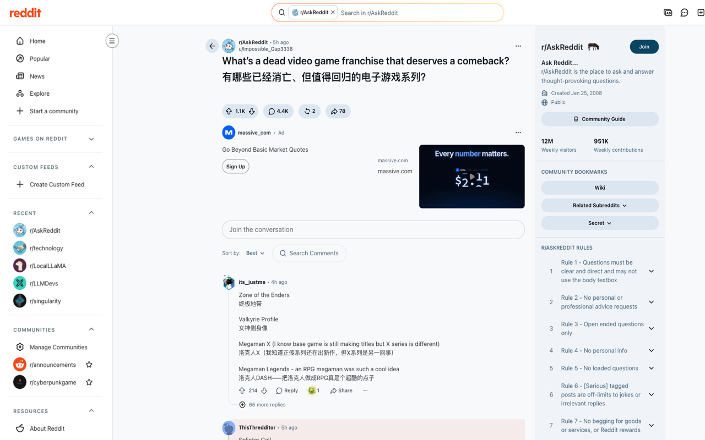
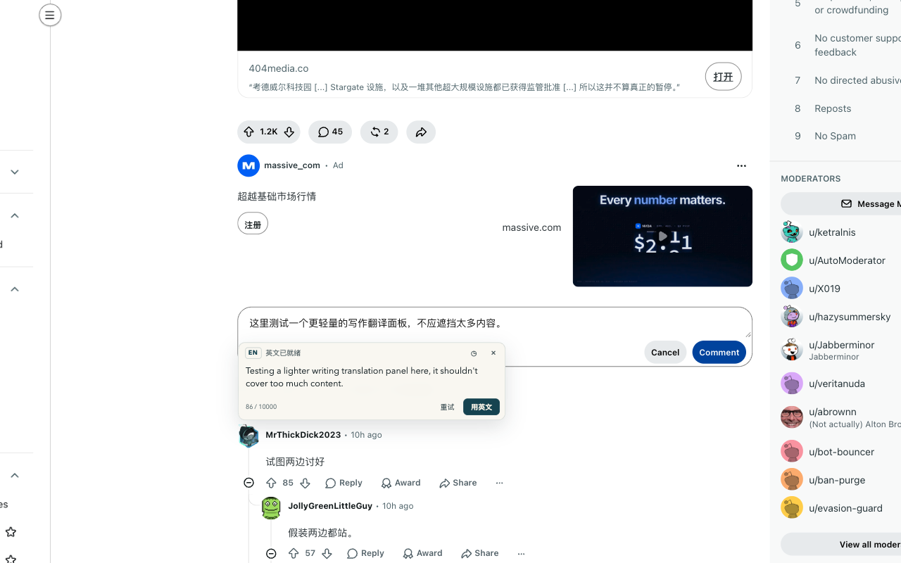

CHROME EXTENSION / 个人阅读工具
整页替换原文，也可以双语对照。Reddit、技术博客、新闻站点，一次翻译读完；还能在评论框里用中文起草，再把英文写回站点。
即将上架 Chrome Web Store

优先翻译首屏，后台补齐全文；滚动加载的新内容会继续翻译，失败段落保留原文并可单独重试。
默认直接替换原文，点击右下角胶囊恢复；也可以保留原文，在每段下方显示译文。
为常用域名开启自动翻译，支持子域名；首次翻译后本地缓存 30 天，重复阅读不再请求模型。
在 Reddit 评论/回复或通用多行编辑器里输入中文，生成可编辑的目标语言预览；默认点发送时自动替换并继续提交，也可以手动替换或关闭此行为。
默认 DeepSeek（deepseek-flash），API key 只保存在本机浏览器，也可以接入任意 OpenAI 兼容接口。
商店审核通过后，这里会换成正式的 Chrome Web Store 安装按钮。当前可以先从源码构建：
npm install && npm run build，在
chrome://extensions 加载 .output/chrome-mv3。
⌘⇧S（Windows/Linux 为 Ctrl+Shift+S）翻译全文，Alt+T 切换原文与译文；写作面板用 ⌥E 开合、⌘⇧↵ 替换。